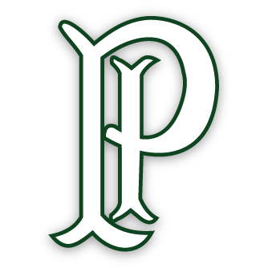
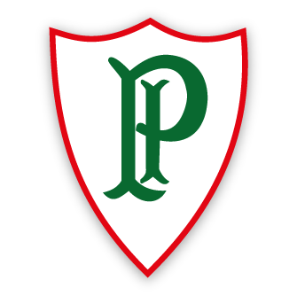
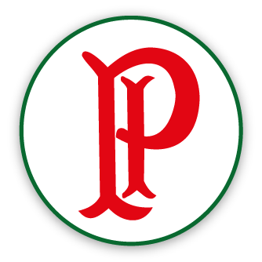

| Home | História | Títulos |
| História da Sociedade Esportiva Palmeiras |
| A história da Sociedade Esportiva Palmeiras começa efetivamente em 1914 por iniciativa de, em sua maioria, moradores do à época italianissimo bairro do Brás, em São Paulo, muitos deles funcionários das Indústrias Matarazzo. Um dos mais envolvidos era o jovem jornalista Vincenzo Ragognetti, que publicou no Fanfulla (órgão de imprensa voltado á colônia italiana na capital paulista) um convite aos interessados na fundação de uma agremiação esportiva que tivesse a representatividade que a imensa comunidade merecia.
O clube poderia ser fundado no dia 19 de agosto, mas não houve acordo com relação ás diretrizes da instituição. Uma nova reunião, então, foi agendada para a semana seguinte, dia 26 de agosto de 1914, na presença de 46 pessoas (entre elas, italianos, brasileiros, dois portugueses e um espanhol) foi fundado o Palestra Italia. Evidentemente que muitas outras pessoas foram responsáveis pela criação do Palestra mesmo não estando presentes na reunião, como, por exemplo, Ernesto Giuliano, que naquele dia viajava à trabalho. Outros tantos ajudaram a viabilizar financeiramente a empreitada e são distintos como fundadores beneméritos do clube. Apesar de já existirem algumas agremiações de essência italiana em São Paulo antes do Palestra Italia, nenhuma tinha o futebol como carro-chefe. Após as exibições do Torino e do Pró-Vercelli, porém, mais de uma dezena de clubes italianos de futebol surgiram só naquela mesma semana das excursões. Algumas tiveram vida curta, outras encontraram espaço nos campeonatos de várzea, e foi o Palestra o grande aglutinador da colônia e simpatizantes. Como a Itália foi definitivamente unificada apenas no final do século XIX, ainda era perceptível no Brasil o agrupamento de imigrantes oriundos de uma mesma região, com calabrases, sicilianos, vênetos, napolitanos, entre outros, convivendo entre si e até falando seu próprio dialeto. O Palestra, então, carregava a ambição de ratificar no Brasil a recém-concluída consolidação da Itália na Europa, formando um time que representasse a comunidade como um todo e, assim, pudesse brigar de frente com as grandes potências do futebol oficial da cidade. Por isso, em vez de entrar em campo sem a preparação adequada (perdendo jogos e desanimando seus seguidores, como ocorreu com vários outros times que surgiam na época), a equipe palestrina ficou meses treinando e realizando avaliações no campo da rua Major Maragliano, na Vila Mariana, a fim de reunir as melhores condições para disputar uma partida oficial. Superadas as dificuldades iniciais que quase obrigaram o Palestra a encerrar prematuramente suas atividades em meio à Primeira Guerra Mundial, já que a agremiação perdeu sócios e jogadores que tiveram que lutar pela Itália, a primeira partida do novo clube foi disputada em 24 de janeiro de 1915, contra o Savoia, no atual município de Votorantim, em amistoso que terminou com vitória palestrina por 2 a 0, gols de Bianco e Alegretti, ambos de pênalti. Disputando somente amistosos em seu primeiro ano de vida, o Palestra Italia conseguiu, em 1916, vaga no torneio estadual regido pela Associação Paulista de Esportes Atléticos (APEA) para participar de sua primeira competição oficial – cuja inscrição na liga já havia sido feita desde abril de 1915. A estreia no Campeonato Paulista ocorreu no dia 13 de maio daquele ano, no empate por 1 a 1 com o Mackenzie, vice-campeão estadual na temporada anterior. Logo no ano seguinte, o clube tornou-se vice-campeão paulista e enfrentou pela primeira vez o Corinthians - vitória por 3 a 0, três gols de Caetano. Em 1918, porém, o Palestra abandonou a APEA em resposta à perseguição que sofria dos clubes de elite da cidade e dos consequentes e frequentes erros de arbitragem. Foi neste período que a Gripe Espanhola assolava a Europa e chegava a São Paulo. O clube, então, abriu suas instalações na Rua Libero Badaró à Cruz Vermelha, fazendo de lá um hospital. O gesto fez com que o Palestra ganhasse simpatia do povo, gerando uma pressão para que a equipe voltasse a figurar no quadro da APEA, o que aconteceu em 1919, culminando em mais um vice-campeonato. Em 1920, apenas seis anos após a fundação, o time palestrino conquistou o título do Campeonato Paulista pela primeira vez na história, vencendo no jogo decisivo o poderoso Paulistano, então tetracampeão estadual, por 2 a 1. Ao mesmo tempo em que se desenvolvia esportivamente, o Palestra também aumentava seu patrimônio. Em 1920, com o apoio da Companhia Matarazzo, o clube efetuou a compra do campo de futebol e de grande parte do terreno do Parque da Antarctica pelo valor de 500 contos de réis, uma fortuna à época. O contrato entre as partes foi firmado no dia 27 de abril de 1920. No mês seguinte, em 16 de maio, já como proprietário do estádio, o Palestra Italia goleou o Mackenzie por 7 a 0. Em agosto, o time conquistou a maior goleada de sua história em partidas oficiais: 11 a 0 sobre o Internacional, marca que permanece até os dias de hoje. |
 |
 |
| (Em seu primeiro jogo, o Palestra Italia venceu o Savoia por 2 a 0 e, de quebra, conquistou a Taça Savoia em 1915) |
(No ano de 1916, o time palestrino participou do Campeonato Paulista pela primeira vez) |
(Primeiro título paulista alviverde, em 1920) |
| "Não nos querem Palestra, pois seremos Palmeiras e nascemos para ser campeões" |
| (Frase dita por Mário Minervino) |
| Era 1942 e a Segunda Guerra Mundial assolava a Europa. O Brasil, neutro até então, entrou ao lado dos Estados Unidos e se tornou inimigo do eixo, o que provocou uma nova ordem: todas as instituições que fossem ligadas ou que tivessem qualquer alusão à Alemanha, Japão ou Itália deveriam mudar de nome ou se refundarem.
Sob forte pressão pública, o Palestra Italia se viu obrigado a mudar de nome, passando a se chamar Palestra de São Paulo (já que “palestra” é uma expressão grega, o que não contrariaria a decisão governamental). A mudança não aplacou as pressões políticas e até esportivas e, sob pena de perder seu patrimônio para outro clube e ser retirado do campeonato que liderava, o Palestra foi obrigado a mudar de nome novamente. Quando o palmeirense disser que o clube nasceu campeão, não se trata de um daqueles exageros de torcedor, mas sim de uma verdade. |
| "O Palestra morre líder, o Palmeiras nasce campeão" |
| A troca de nome de Palestra de São Paulo para Palmeiras se deu exatamente na véspera da final do Paulistão de 1942, contra o São Paulo. Em uma reunião da diretoria, ficou decidido o novo nome como Sociedade Esportiva Palmeiras, nome que foi escolhido para homenagear a então extinta Associação Atlética Palmeiras, instituição que tinha bom relacionamento com o Palestra e que ajudou o clube em outros momentos.
O primeiro jogo como Palmeiras foi justamente na decisão do Paulista. A equipe vencia por 3 a 1 e encaminhou o título após a marcação de um pênalti, quando o Tricolor decidiu se retirar de campo e entregar o título estadual ao alviverde. |
| Maior ídolo da Sociedade Esportiva Palmeiras |
| Ademir da Guia "O Divino" |
| Um dos maiores expoentes da história repleta de glórias da Sociedade Esportiva Palmeiras é, indiscutivelmente, Ademir da Guia, “O Divino”. Filho do ex-zagueiro Domingos da Guia, Ademir além do talento para o futebol, herdou também o apelido do pai, que era conhecido como “Divino Mestre”. Iniciou a carreira na equipe alviverde com dezenove anos em um clássico vencido pelo placar de 3 a 0 contra o Corinthians.
Foi peça fundamental na sólida equipe palmeirense dos anos 1960 e 1970, época em que o futebol brasileiro e paulista contava com o Rei Pelé em alto nível. Títulos nacionais que antecederam o Campeonato brasileiro como o Torneio Roberto Gomes Pedrosa (1967 e 1969), a Taça Brasil (1967) e o próprio Campeonato Brasileiro (1972 e 1973) tiveram o Palmeiras campeão com protagonismo de Ademir da Guia. É o jogador que mais atuou com a camisa alviverde, 902 vezez. Graças a Ademir e aos demais jogadores da Academia, o Palmeiras foi um dos únicos times brasileiros a fazer frente ao Santos de Pelé. Durante a passagem do "Divino" pelo alviverde, o Verdão foi pentacampeão brasileiro. |
|
|
| Escudos do Palmeiras |
 |
1914 - Palestra Italia Elaborado nos primeiros anos de vida do clube, era o símbolo institucional utilizado em impressos, carteiras sociais e na bandeira oficial. Na circunferência menor, de fundo branco, havia o contorno da Cruz de Savoia preenchido na cor verde com o “P” e o “I” arcaicos inseridos no meio, em amarelo. Acima, a inscrição “Palestra” em amarelo. Na circunferência maior, de fundo vermelho, a inscrição “Italia”, em amarelo. |
||||||||||||||||||
 |
1942 - Palestra de São Paulo Símbolo provisório utilizado no período da mudança de nome. O centro da circunferência menor foi descolocado para baixo, com o contorno da Cruz de Savoia preenchido de verde com o “P” inserido em amarelo e, fora do contorno, a inscrição “De S. Paulo” também em amarelo. Na circunferência maior, de fundo verde, havia estrelas em amarelo e a inscrição “Palestra” também em amarelo. |
||||||||||||||||||
| 1942 - Palmeiras É o atual símbolo institucional e de camisa do clube. Na circunferência menor, de fundo branco, reapareceu o contorno da Cruz de Savoia, preenchido por 26 linhas alusivas ao dia de fundação do clube e com o tradicional “P” inserido no meio. Na circunferência maior, de fundo verde, apareceu a inscrição “Palmeiras” em branco e, também em branco, oito estrelas, que fazem referência ao mês de fundação do Palestra. |
| Escudos das Camisas |
|  | 1915 Foi o primeiro distintivo utilizado na camisa do clube. As letras arcaicas “P” e “I”, nas cores brancas, estampavam o lado esquerdo do peito do uniforme verde do Palestra Italia. Foi utilizado no primeiro jogo da equipe (Palestra Italia 2 x 0 Savoia, em Votorantim, no dia 24 de janeiro de 1915). |
 |
1916 Para a disputa do Campeonato Paulista de 1916, a diretoria palestrina decidiu importar da Itália um jogo de camisa com o escudo da Cruz de Savoia, símbolo da Casa Real Italiana. O distintivo foi utilizado no primeiro jogo oficial do Palestra Italia (empate por 1 a 1 com o Mackenzie, no dia 13 de maio) |
 |
1917 contorno da Cruz de Savoia permaneceu, mas o desenho interno trouxe de volta as letras “P” e “I”, desta vez inseridas em um fundo verde. |
|  | 1918 Em novo distintivo, o formato da Cruz de Savoia permaneceu, mas ganhou contorno na cor vermelha e preenchimento branco. No centro, as letras "P" e "I" entrecortando-se mudaram para a cor verde. |
 |
1919 O formato do distintivo passou a ser circular, orlado de vermelho em um fundo branco. No centro, as letras "P" (na cor verde) e "I" (em vermelho) entrecortando-se. Foi o escudo utilizado no primeiro título palestrino (Campeonato Paulista de 1920). |
|  | 1928 Com o mesmo formato circular, mudou-se apenas a disposição das cores - orlado de verde num fundo branco. No centro, as letras "P" e "I" passaram a aparecer ambas em vermelho. |
| 1937 Com o mesmo formato circular, nova mudança na disposição das cores - desta vez, orlado de branco num fundo verde. No centro, as letras "P" e "I", ambas em vermelho, entrecortando-se. |
|
 |
1942 Retirou-se o vermelho e a letra “I” do escudo, ficando apenas o verde e o branco, com a letra "P" no centro. Foi o primeiro escudo na camisa do Palmeiras após a mudança de nome. |
 |
1959 O distintivo sofreu grande alteração. Na circunferência menor, de fundo branco, foi recolocado o contorno da Cruz de Savoia, preenchido por 26 linhas alusivas ao dia de fundação do clube e com o tradicional “P” inserido no meio. Na circunferência maior, de fundo verde, apareceu a inscrição “Palmeiras” em branco e as oito estrelas, que fazem referência ao mês de fundação do Palestra. É o símbolo usado até hoje na camisa do Palmeiras. |
 |
2017 Pela primeira vez após quase seis décadas, um novo escudo foi usado na camisa. O “P” estilizado presente no atual símbolo institucional do clube foi estampado sozinho no uniforme, em homenagem aos 75 anos da Arrancada Heroica, quando o Verdão trocou de nome e substituiu o “PI” do Palestra Italia pelo P de Palmeiras. Permaneceu até março de 2018. |